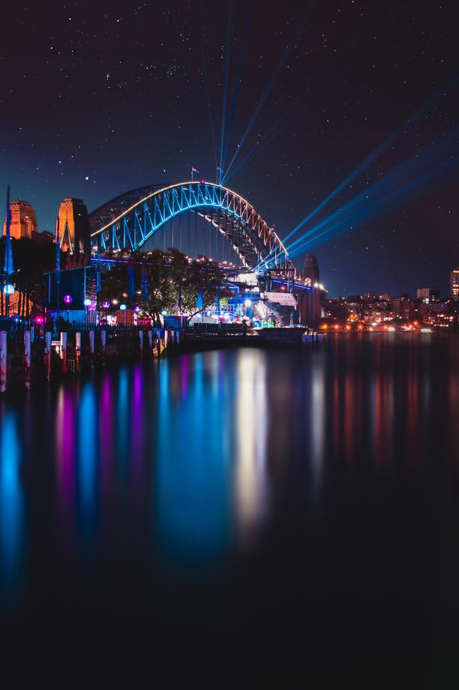
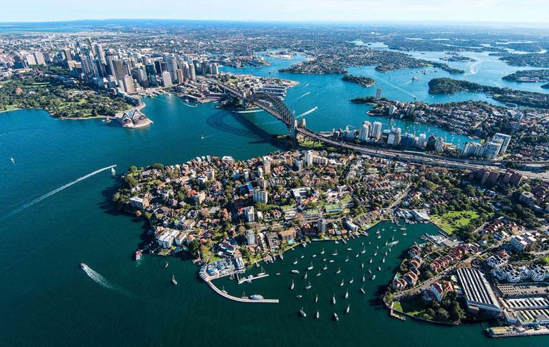

SIDNEY
L'opera de SIDNEY
Inauguré en 1973,l'OPERA DE SIDNEY presente une architecture originale qui lui a rapidement valu une renommée mondiale.Il est devenue un symbole de la ville de sydney et de l'australie.jpeg)

harbour bridge
LE HARBOUR BRIDGE ou pont de sidney,est un pont en arc metallique situé dans la ville de sidney. Il est le principale point de traversée de la baiede sydney,permettant le passage des trains,automobiles et piétons entre le quartier des affaires et la rive nord de la baie. La vue du pont et de l'opera,tout proche,est emblematique de la ville et de l'australie entiére.
